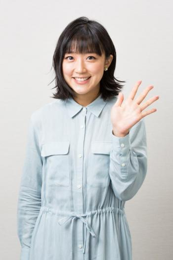
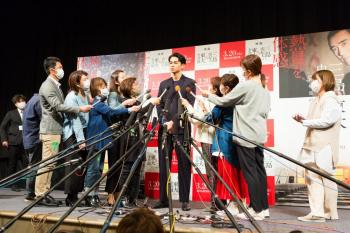

元テレ朝・竹内由恵さん、一度離れたテレビの世界。3カ月復帰を決めた理由
竹内由恵さん（撮影／写真部・小黒冴夏）
――仕事と結婚、子育ての両立に悩む人はまだ多くいます。政府は2020年までに、リーダー層の女性を少なくとも30％にすると掲げていましたが、なかなか実現できていません。
女性の進出が進んでいるとはいえ、他の国に比べると男性社会なのだと感じています。海外で活躍している女性CEOや起業家が出演するポッドキャストを聴いていると、凄まじいキャリアを歩んできた人が子どもを2人産んでいたりする。いつ産んで育てたんだろう？とふと考えてしまうんです。日本でも、そんな疑問を抱くことのないくらい、それが当たり前だといえる社会になってほしいと思っています。
私自身、結婚する際は相手との生活を優先しキャリアを手放す道を選びました。でも仕事を離れてみてやっぱり社会と関わりを持ちたいと思ったのです。女性がすべてを背負い込まないで、やりたいことをやる、選びたいことを選ぶというのが普通になってほしいですね。そのためにはパートナーの理解と協力は不可欠だと思います。
――働き方を選べて、それを尊重する環境が当たり前になってほしいです。復帰を周りに伝えたときの反応はどうでしたか。
伝えるときはドキドキしましたが、「やっぱり復帰すると思ってた」と周りの人は思っていたみたいです。「家にずっといる生活は無理でしょう」とも言われました（笑）。
――20代の頃のがむしゃらな竹内さんを知っているからこそですね。当時、睡眠や休みはとれていましたか。
しっかり寝てはいたと思います。ただ、20代の頃は休みがあるのが怖くて、「もっと頑張らなきゃ」「もっと認められなきゃ」という気持ちがありました。休日もスポーツの試合を観に行って。結果的にそれを見ていた方が「よくわからないけど、いつも現場にいるぞ」と興味を持ってくださって、スポーツ関連の仕事にもつながりました。
――そうなんですね。音楽からスポーツまで幅広く活躍されていた印象があります。それだけに番組異動にいつも注目されませんでしたか。
おすすめの記事
 元テレ朝・竹内由恵アナ、「ギラギラ」していた過去、...
元テレ朝・竹内由恵アナ、「ギラギラ」していた過去、...(03/08) AERA
- 竹内由恵アナ 英語が話せない海外暮らしで友達と仲良...
(05/24) AERA
- 女子アナ「負け組」はカトパン、有働、田中みなみ 「...
(01/02) dot.
 松原智恵子、監督に竹内結子、蒼井優と“3姉妹”と言...
松原智恵子、監督に竹内結子、蒼井優と“3姉妹”と言...(06/01) 週刊朝日
 TOKIO・城島茂 結婚会見【会見全文・中編】「（...
TOKIO・城島茂 結婚会見【会見全文・中編】「（...(09/28) dot.
- TOKIO・城島茂 結婚会見【会見全文・後編】「（...
(09/28) dot.
- 東出【不倫謝罪全文（2）】（唐田とは別れた？）「は...
(03/17) dot.
- TBS「陸王」好スタート 阿川佐和子の“意外な”女...
(10/25) 週刊朝日
あわせて読みたい
- 「降板」相次いだ2019年 ピンチを救った「奇跡の代役」たち (12/16)
- 巨人が山田哲人を獲得したら…日本球界が史上最も“シラケる”のは必至か (01/09)
- 古賀茂明「安倍政権の人事介入で、検察の反乱が起きる」 (02/11)
- 野茂英雄の“普通ならありえへん記録”伝説 (10/27)
- Promoted ZEB導入におけるパートナー選定の決め手とは？ (12/31) 三菱電機株式会社
- Promoted 裏庭に巨大な穴を掘った男性、近所から羨望のまなざしを向けられる (04/19) PostFun
- 元CAの妻が激白 立憲・枝野代表に「初めて怒鳴られた」出来事 (10/23)
- Promoted 美人すぎる三つ子！DNAテストで分かった衝撃的な結果とは (11/06) PostFun
- 瀬戸内寂聴「そろそろ、あちらへ出発の予感。葬儀委員長は美輪さんに」 (02/16)
- うつ病を克服した精神科医が実践「心のゴミの出し方」とは？ (10/11)
- なぜ？ 巨人・阿部慎之助のシーズン最終打席でブーイングが巻き起こったワケ (12/21)
- 間違って来日しちゃった助っ人とも契約… “超ゆるゆる”だった昔のプロ野球 (03/03)
- Promoted ある女性が子供を野生動物の間で育てた、20年後の結果がこちら (07/07) SOOLIDE
- Promoted サンスター開発！歯周病、予防ではなく症状に「効く」 (12/31) サンスター
- 早稲田大の順位が急落した理由は？ キャビンアテンダント就職者の出身大学ランキング (12/27)
- Promoted 暗記は「英文81コ」だけ！通訳になった女性の勉強法 (12/31) ウェンズデー